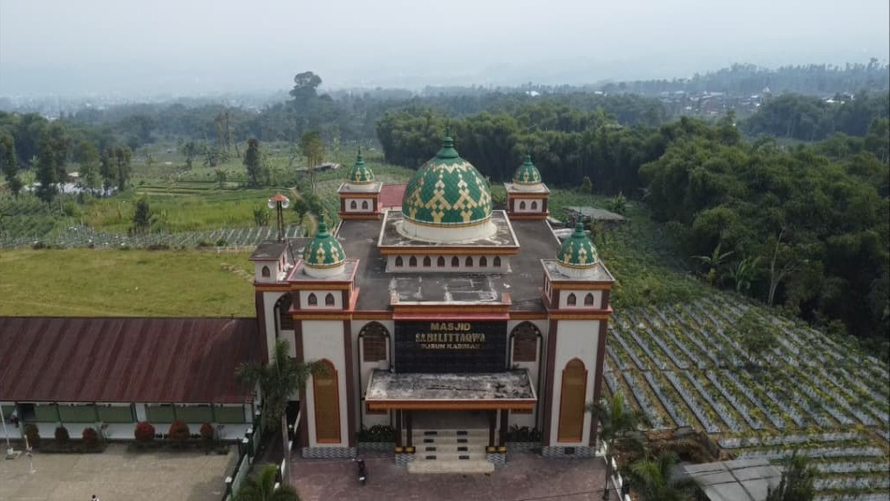
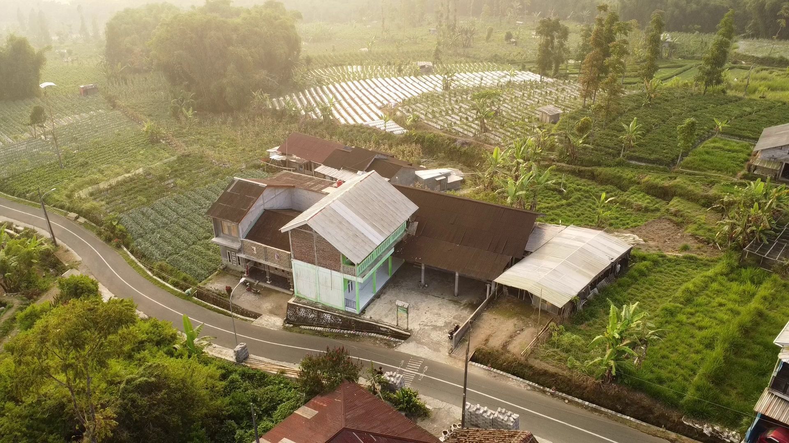

Infrastruktur & Aset Spasial
Detail Fasilitas Umum
Direktori lengkap fasilitas publik di Dusun Kasiman. Klik kartu untuk melihat foto, deskripsi lengkap, atau video lokasi (jika tersedia).
Tempat Ibadah

Masjid Sabilil Taqwa
Dusun Kasiman
Klik untuk detail

Mushola Baitul Mutaqim
Dusun Kasiman
Klik untuk detail

Mushola Al Mubarok
Dusun Kasiman
Klik untuk detail

Mushola Al Hikmah
Dusun Kasiman
Klik untuk detail
Fasilitas Pendidikan
[Foto SD N 2 Gemblengan]
SD Negeri 2 Gemblengan
Dusun Kasiman
Klik untuk detail

TPQ Tarbiyatul Mubarok
Dusun Kasiman
Klik untuk detail